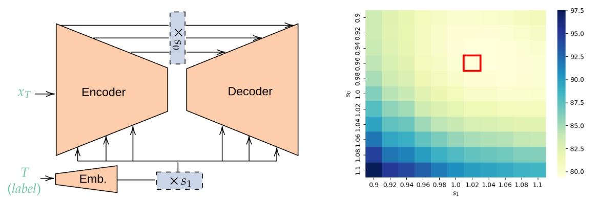

Rescaling Intermediate Features Makes Trained Consistency Models Perform Better
Tiny Paper@ICLR 2024The Second Tiny Paper Track @ ICLR

In brief
A post-training tweak for consistency models: rescaling their intermediate features at inference time improves one-step sample quality with no detectable computational overhead, evidenced by a clear improvement in FID.
Key takeaways
- Post-training, inference-time rescaling of internal features enhances one-step sample quality of trained consistency models.
- The improvement comes with no detectable computational overhead.
- Evidenced by a clear improvement in Frechet Inception Distance (FID); recognized as a Notable paper in the Tiny Papers track at ICLR 2024.
Abstract
In the domain of deep generative models, diffusion models are renowned for their high-quality image generation but are constrained by intensive computational demands. To mitigate this, consistency models have been proposed as a computationally efficient alternative. Our research reveals that post-training rescaling of internal features can enhance the one-step sample quality of these models without incurring detectable computational overhead. This optimization is evidenced by an obvious improvement in Frechet Inception Distance (FID).
BibTeX
@inproceedings{zhu_rescale,
title = {Rescaling Intermediate Features Makes Trained Consistency Models Perform Better},
author = {Zhu, Junyi and Lin, Zinan and Liu, Enshu and Ning, Xuefei and Blaschko, Matthew B.},
year = {2024},
booktitle = {The Second Tiny Paper Track @ ICLR},
}